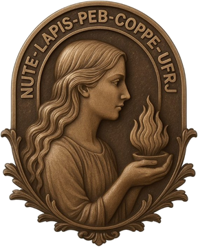
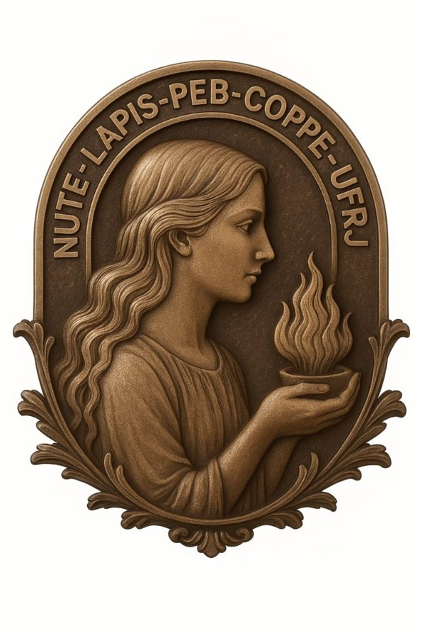
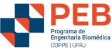
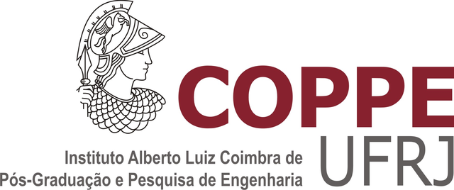
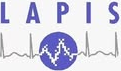
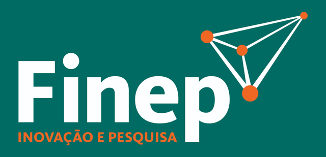
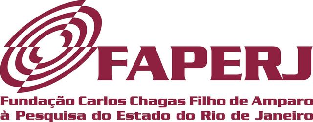
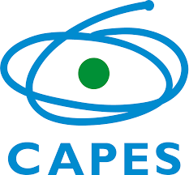

Termografia infravermelha como ferramenta de estudo do envelhecimento fisiológico
Objetivo: entender como o calor do corpo e a força das mãos mudam à medida que envelhecemos.
Engenharia Biomédica · COPPE/UFRJ
Pesquisamos imagens térmicas do corpo humano no Laboratório de Processamento de Imagens e Sinais (LAPIS) do Programa de Engenharia Biomédica da COPPE/UFRJ. Aqui explicamos, em linguagem simples, o que fazemos e como você pode participar.
Convite aos voluntários
A coleta de dados faz parte de duas pesquisas do Programa de Engenharia Biomédica da COPPE/UFRJ, aprovadas por Comitê de Ética em Pesquisa. Em um único atendimento, os dados servem às duas.
Objetivo: entender como o calor do corpo e a força das mãos mudam à medida que envelhecemos.
Objetivo: verificar se uma cabine que isola o rosto do ar da sala deixa a medida de temperatura mais estável e repetível.
Antes de qualquer procedimento, a equipe lê com você o Termo de Consentimento Livre e Esclarecido (TCLE), tira suas dúvidas e, só se você concordar, vocês dois assinam. Uma via fica com você. Você pode desistir a qualquer momento, sem nenhum prejuízo.
Explicação da pesquisa, dúvidas e assinatura do termo.
Perguntas sobre sua saúde geral e seu estado mental.
Você aperta um aparelho que mede a força de preensão.
Uma balança especial estima músculos, gordura e água do corpo.
Face (com e sem a cabine), corpo inteiro de frente e de costas e mãos, de pé e sentado.
Cerca de 90 minutos por fase. São três fases, com 12 meses entre cada uma.
Roupa de banho (sunga ou biquíni). As imagens são feitas atrás de biombo, só com o pesquisador necessário na sala.
Você não paga nada. O deslocamento e, se necessário, um lanche são custeados pelos pesquisadores.
Não. A câmera térmica apenas capta o calor que a sua pele já emite naturalmente. Ela não encosta em você e não lança nenhum tipo de radiação.
O risco é baixo. O teste de força pode cansar a mão, o punho ou o antebraço. Nas imagens das mãos, um manguito de aparelho de pressão aperta o braço esquerdo por 2 minutos. Ficar parado e em roupa de banho por um tempo também pode ser desconfortável. Os questionários podem causar cansaço ou desconforto emocional — você pode pausar quando quiser. Não é dado nenhum remédio.
Avise a equipe. Quem usa marca-passo ou outro implante eletrônico não pode fazer o exame na balança de composição corporal.
Não. A participação é voluntária. Você contribui para que a termografia se torne uma ferramenta confiável para médicos e fisioterapeutas.
Sim. Sua identidade é mantida em sigilo, conforme a Lei Geral de Proteção de Dados. Os resultados são analisados em conjunto e ninguém é identificado em publicações.
Pode, a qualquer momento e sem dar explicações. Recusar ou desistir não traz nenhuma penalidade.
Ao Comitê de Ética em Pesquisa da Faculdade de Odontologia da UFRJ: cep@odonto.ufrj.br. O Comitê existe para proteger os participantes.
Para começar
É uma forma de “fotografar o calor”. Tudo o que existe emite calor na forma de luz infravermelha, invisível aos nossos olhos. A câmera térmica enxerga essa luz e transforma cada ponto da imagem em uma temperatura.
A pele emite calor o tempo todo. Esse calor muda com a circulação do sangue, com inflamações e com o sistema nervoso.
Ela não toca, não aquece e não emite radiação. Por isso o exame é seguro e não dói.
Cada pixel guarda uma temperatura. Com engenharia, transformamos imagens em medidas que podem ser comparadas.
O problema que enfrentamos
A termografia é sensível — e isso é bom e ruim. Pequenas mudanças no ambiente alteram a medida. Sem protocolos validados, resultados de laboratórios diferentes não podem ser comparados. Esse é o problema da reprodutibilidade.
O ar frio ou quente muda a temperatura da pele.
O ciclo do aparelho faz o ambiente oscilar durante o exame.
Câmeras não refrigeradas mudam a leitura enquanto aquecem.
Mudar a posição muda o tamanho e a leitura da área medida.
Lâmpadas e pessoas próximas refletem calor na pele.
Atividade física, banho quente e cremes antes do exame interferem.
Nossa proposta
Nascemos da termografia médica, mas queremos oferecer estrutura para qualquer pesquisa com imagem térmica na UFRJ — da saúde à engenharia, da veterinária à arquitetura. O papel da Engenharia Biomédica é garantir a medida: calibração, controle do ambiente, estimativa de incerteza e processamento de imagens e sinais.
Procedimentos operacionais padrão, testados e publicados, para que qualquer grupo repita a coleta do mesmo jeito.
Sala climatizada, monitoramento de temperatura e umidade e cabines de isolamento.
Equipamentos e métodos compartilhados com outras unidades e programas da universidade.
Resultados explicados em linguagem simples e visitas abertas ao público.
Assista
Toque em um vídeo para assistir aqui mesmo.
Em breve, vídeos sobre termografia e sobre as nossas pesquisas.
Leituras
Estudos relevantes em termografia, com um comentário em linguagem simples sobre o que foi feito e por que importa.
Os primeiros artigos comentados serão publicados em breve.
Espaço do pesquisador
Trabalhos dos pesquisadores ligados ao grupo de termografia do PEB/COPPE/UFRJ.
Quem somos
Comunicação
Quem recebe um convite para participar de uma pesquisa precisa encontrar o laboratório na internet e confiar no que lê. Uma identidade visual séria e consistente é parte da ética da comunicação com o participante.

Logotipo NUTE. Vesta, a deusa do fogo sagrado, segura a chama que simboliza o calor que medimos e a medida mantida sempre do mesmo jeito. O significado completo está logo abaixo.
#0A2342#1F5FA8#3B8ED8#9BD6F4#F4F8FCA escala vai do azul profundo ao branco, como a paleta “fria” de uma câmera térmica.
Roboto — títulos
Open Sans — textos longos, com ótima leitura em telas.
Fontes livres, guardadas no próprio site: carregam rápido e funcionam sem serviços externos.

Proposta de emblema
Hoje, quase todo o contato com participantes, parceiros e financiadores começa pela internet. Por isso um laboratório precisa de identidade visual: olhar um símbolo e associá-lo imediatamente a um projeto dá credibilidade ao convite e ajuda a ciência a circular.
O emblema dialoga com o brasão da UFRJ, que traz Minerva, deusa romana da sabedoria. Ao lado dela, escolhemos Vesta (Héstia, para os gregos), a deusa do fogo sagrado. Em Roma, sua chama ardia sem interrupção no templo, cuidada pelas sacerdotisas vestais, e simbolizava a continuidade e a estabilidade da cidade.
Na peça, uma figura feminina em relevo segura nas mãos uma pequena tigela com a chama. O fogo é o calor que medimos com a termografia; mantê-lo aceso, sempre do mesmo jeito, traduz a nossa missão: uma medida estável, controlada e reprodutível. A moldura em arco traz a inscrição NUTE · LAPIS · PEB · COPPE · UFRJ, a cadeia institucional a que pertencemos, e os ramos na base remetem à tradição dos brasões acadêmicos.
O emblema identifica o Núcleo no site e nas peças solenes (certificados, placas, eventos). Ele compõe, com a paleta de cores e as fontes, a proposta de identidade visual submetida à chefia do laboratório.
Nenhum evento agendado no momento.
Conheça o laboratório, veja uma câmera térmica funcionando e converse com os pesquisadores. Aberto ao público, com inscrição prévia.
As próximas datas de visita serão divulgadas aqui.
Galeria
Eventos e o dia a dia na COPPE. Toque para ampliar.
Em breve, fotos de eventos e do dia a dia do laboratório.

Onde estamos
A Engenharia Biomédica une engenharia e saúde para criar e validar tecnologias de diagnóstico, monitorização e tratamento. Conheça os laboratórios do programa:
Site do PEBInstituições, apoio e agradecimentos
Universidade Federal do Rio de Janeiro: ensino, pesquisa e extensão públicos.

Instituto de pós-graduação e pesquisa em engenharia da UFRJ.
Programa de Engenharia Biomédica: pós-graduação que une engenharia e saúde.

Laboratório de Processamento de Imagens e Sinais, sede das pesquisas.

Financiou boa parte do prédio e dos equipamentos que usamos.

Fundação de amparo à pesquisa do Estado do Rio de Janeiro.

Avalia a pós-graduação brasileira e concede bolsas de estudo.
Fomento à pesquisa científica e mantenedor da Plataforma Lattes.
Como chegar
Programa de Engenharia Biomédica — COPPE/UFRJ
Cidade Universitária, Ilha do Fundão, Rio de Janeiro – RJ